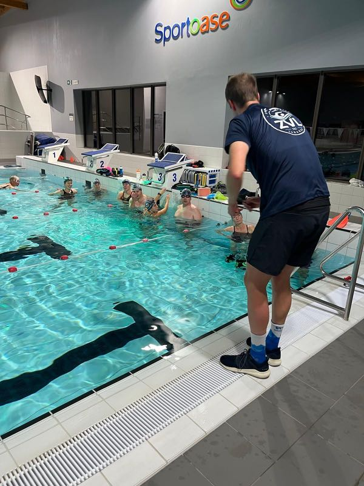

Bij Zwemvereniging Lanaken bieden we borstcrawl zwemtrainingen aan voor de al enigszins gevorderde zwemmer. Verwacht wordt dat je 100 meter met borstcrawl zwemmen in max 2,5 minuut zonder in ernstige ademhalingsnood te komen. Mocht dat niet lukken, dan zou je kunnen overwegen om ofwel bij de Zwemschool van de SportOase Lanaken ofwel bij Athlonix in Maastricht een borstcrawlcursus voor beginners te volgen.
Na het afronden van die cursus kun je zeker bij ons terecht.
Trainingen gericht op zwemtechniek, tempo en afstand voor langeafstand-zwemmers, bijvoorbeeld voor triatlon-races.

Vanaf 1 mei kunnen leden onderling afspraken maken om samen openwatertrainingen te organiseren op dinsdagavond en/of zaterdagmorgen, afhankelijk van de weersomstandigheden, in het Grindgat te Maastricht/Eijsden of in het Bastion te Maaseik/Kinrooi. Deze activiteiten worden niet georganiseerd door de zwemvereniging en vallen volledig onder de eigen verantwoordelijkheid van de deelnemers.
Onze vereniging onderzoekt momenteel of er in de directe omgeving van Lanaken een geschikte locatie beschikbaar is, zodat we daar in de toekomst samen kunnen trainen.